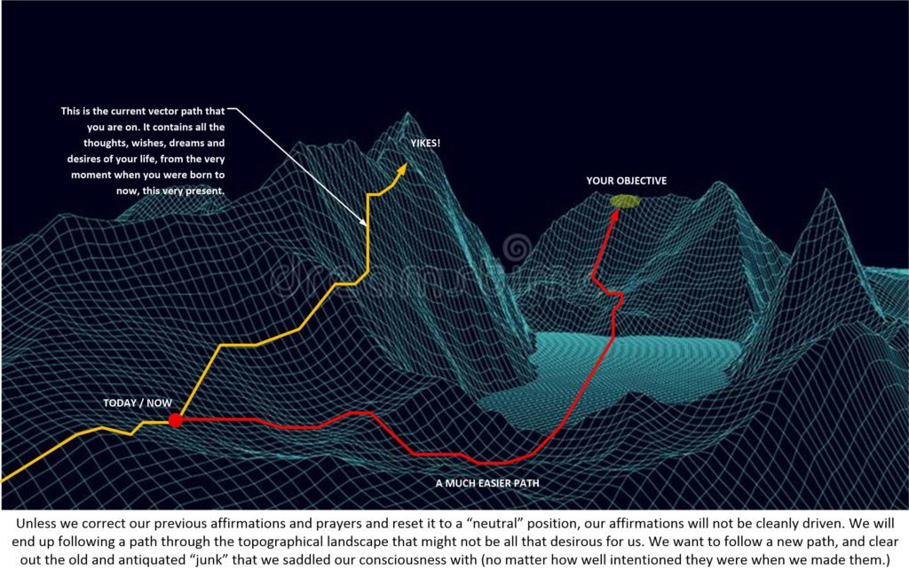
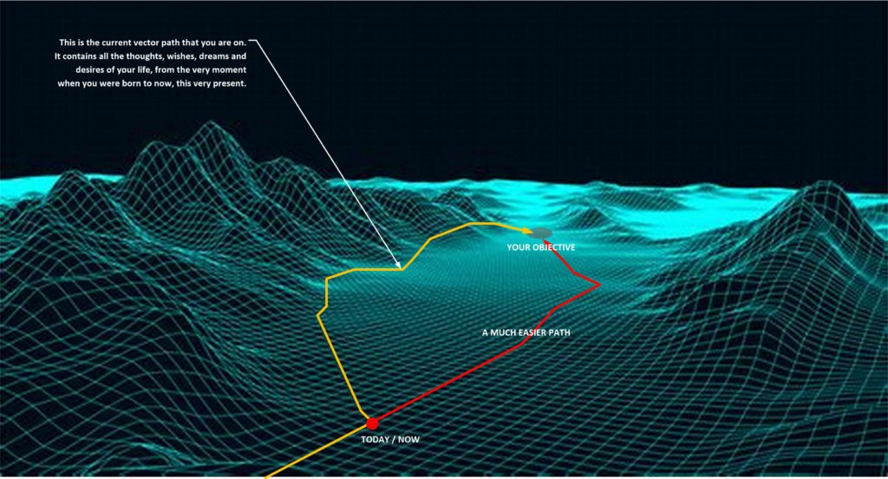

Here is another prayer and affirmation campaign post.
In this post we look at making “course corrections” in a prayer and affirmation campaign. This is pretty important. Because as your life progresses you grow, and as you grow your opinions, attitudes and ideas about life change. What might have been important to you as a “piss and vinegar” young person in their twenties, is not the same as you in your mid-thirties with a family, children and a rough job situation. You grow and you need to conduct prayer affirmation campaigns that either build upon previous ones, or that erases previous efforts and allow you to plow ahead free of encumbrances.
So let’s look at this.
First item of clarity
The very first item of clarity is the understanding that there is no such thing as time. And thus every single speech, talk, writing, or prayer all are happening and continues to happen today. Even though you have moved on with your life and the prayers happened decades ago, they still have equal validity as if you are making them right now. Yikes!
Which means that all of those thoughts, prayers, talks, and writings has set your consciousness on a vector path that you are now following.
And when you make a new prayer affirmation campaign, it is in effect, making “nudges” or pushes to the existing vector path that you have already laid out.
It is not a brand new vector direction. Rather it is a modification of a vector direction that you are currently on and engaged upon.
So what you REALLY want to do is have new affirmation prayer campaigns that establish brand new directions (instead of building upon old ones), if that is your desire. Here we are going to discuss ways and means to manage this. I like to call this “making course corrections”.
Making Course Corrections
Consider this image below…

The path vector that a person is on when he / she travels the MWI is the combined result of thoughts, actions, behaviors, talks, writings and experiences. And while you might have a very robust and determined affirmation prayer campaign, you still need to deal with the accumulated combination of all your prior efforts and thoughts.
The best and easiest way to “reset” these actions is to make a “course correction”.
In the image above, a “course correction” on the MWI enables a completely new prayer affirmation campaign to redirect and reset the direction vector that your consciousness has embarked upon. As you can see, the new revised course is on red. it is an easier and less frightening course. Not so precarious.
As the old path has the vector direction on the side of “mountains” on the topographical map. Meaning that it would be very easy to “slide off the cliff side” and end up further away from your goal.
The new and revised map is much better with only the final stages of the vector directed path being contentious and potentially problematic.
But how to do it?
How do you make a “course correction”?
Well, there are various techniques and methods.
-
-
- Don’t do anything.
- Selectively erase the past affirmations.
- Scrub and clean the template map
-
[1] Don’t do anything.
This strategy is quite simple. You run the affirmation prayer campaign as all of us do and don’t make any allowances otherwise. You pretty much acknowledge that you have done and said things in the past that may or may not influence your current affirmation prayer campaign, but you don’t worry about the influence of it.
This is fine when you are pretty much a loner, never prayed before, never had an affirmation campaign before, and pretty much lived a low-key lifestyle. The chances are that your previous influences were not all that serious and were unable to result in strange meaningful opposition to what every prayer campaign that you are now involved in.
As illustrated in this picture below…

You really don’t need to do anything at all about your previous affirmations or statements.
[2] Erase the past selectively
Let’s suppose that you have made mistakes in prior statements, and affirmations and prayers. You don’t want them to continue to haunt your contemporaneous prayer and affirmation campaign, what do you do?
Well, you can add statements within your campaign that selectively erases the mistakes that you have made in the past. Such as some of these suggestions…
- Any previous actions, statements or affirmations that I have made in my past, that will have a contrary effect on my current affirmation prayer campaign, are ignored and does not influence my current affirmation campaign.
Which is a pretty good affirmation if you don’t want to completely erase prior efforts.
Of course, you could also “nuke” all past efforts, mistake completely and force a “clean, white paper” to begin your latest affirmation campaign upon. Such as this example…
- My current affirmation prayer campaign is free from any detours, delays, complications or modifiers as a result of prior campaigns, actions or thoughts.
[3] You can refresh the template
Your verbal prayer affirmations are all very powerful. You will be amazed at what they are capable of. Here in this technique, you actually end up refreshing the template. Or, in other words, removing the soiled linen tablecloth and replacing it with a clean and new one.
The technique involves a slide.
You “slide” off the old template map (whether a pre-birth world-line template or something else) and on to an absolute duplicate one that now possess the characteristics that you specify.
There are many ways to accomplish this. Let me offer the easiest technique. It’s where you simply specify sliding to a “refreshed” world-line template.
- I authorize a slide to a cleaned up version of my current world-line topographic map. This new map is functionally identical to the map that I am using right now with the exception that any obstacles, debris, confusion, and detours that are a direct result of prior affirmation campaigns, spells, mistakes, or problems are removed from it.
Then you can rest assured that you can continue on your life journey with the understanding that past mistakes (in regards to prayer affirmations) will not haunt your efforts.
On the MM scene
Well, I am starting a new affirmation campaign this April. And I want to de-clutter. I do this from time to time. Not often enough, I am afraid. But you know that for us to grow our previous expectations and life changes. Everyone should be experiencing a new appreciation of life and their families after the horrible 2020 that we all endured. Right?
Well I am no exception.
I have been conducting affirmation prayer campaigns for the last four decades, or at least ever since I went through my calibration at China Lake NWC. This was something that became easy and necessary for me to do and engage in. I had no choice. I really needed to do it. You know, to keep my sanity.
And after many decades of campaigns, false starts, dead ends, road blocks, adjustments and all of that, my MWI topographical map tends to look like a messy battlefield. Which I suppose is workable, but not optional.
So every now and again I need to clean things up. Because, as I have explained earlier, there is no such thing as time. My desire to have a Miami Vice style home in a Florida like environment has been supplanted by a more reasonable desire to have a beautiful home overlooking the ocean full of plants, wine, great food and pretty girls. Not to forget friends and family. You know, something like from the movie “A Walk in the clouds“.
Now, of course, if I don’t clean up my terrain, it won’t be a problem. As I will have both the aspects of my Miami Vice lifestyle along with the wine and lifestyle that I desire. But maybe I don’t want to have that relic of the past. Maybe I just want exactly the new lifestyle, and nothing associated with the dreams that I had as a young man. Maybe…
I no longer want ANY association with the dreams and desires of a young man…
And that is life, don’t you know, you grow. You change. You age. Your desires mature and advance. You have other priorities in your life and you find that things that used to be of interest to you no longer hold that grasp on your soul.
It’s called maturing.
It’s what happens when life hits your hard on the head and you experience those things that you longed for. And when you discover that they really weren’t all what they were cracked up to be. Yeah.
Right now, to me, a life in Grady, Hooterville, or Mayberry RFD seems to be the kind of environment that I want my children to grow up in. A Chinese versions (of course) and near the ocean and beaches, of course. But this reality differs considerably from the image of a beach house in Vero Beach, Sana Barbara, or Fort Lauderdale. Don’t you know.
Yeah. I know. It’s all Hollywood. And there are aspects of the back woods, small town life that I do not like. But the fundamental aspects of knowing everyone, being a member within society, and having a more relaxed and easy-going pace is something that appeals to me. It differs substantially from that of the fast-pace, all-excitement image portrayed within Miami Vice.
And that is what life is all about. Growth. And you can establish the life that you want to live. You simply navigate the map and the template that you were given. You are careful on mow you interpret the map and you make sure that you are cautious and observant.
No.
I do not want the erasure of my past to begin a totally different life.
I want the addition of new aspects, and a clarification of certain specific aspects to what I already possess. This takes thought. This takes planning. This takes concern. This takes action.
So what do you do when you have a great life, but there are elements within it that your old life your enjoy, but now as a much older person are not all that important to you. What do you do?
Well you dust off the old template, and you make sure that the older desires, wishes, prayers and affirmations no longer have a new bearing on your direction and you current desires. You cleanse the template.
Conclusion
Right now, I must say, lovely Zhuhai is sort of like America in the 1950’s. Only very high-tech. If that makes any sense. And I want to keep it this way. I do not want any of this to change. I think that it is a lovely area to raise a family, live a life, work and cavort with friends.
And since I am doing fine right now, the idea of cleaning the template must be considered most carefully, and (of course) selectively. You need to identify the things that you might no longer want and place a softer, easier way to excise them form your plan and map.
Of course other issues come into play. I most certainly don’t want Shenzhen and Hong Kong to be obliterated in a fireball by an American ICBM. I don’t want to get ill, have some kinds of “old man” health issues, and I really don’t want the kinds of surprises that many Americans tend to deal with on a daily basis.
As long as I hold an American passport, these concerns will continue to be stabled to my soul.
Yet, you and I know that we can control our reality by thought. And so we do. The use of a method to clean out the underbrush is always something to keep in mind when you are running an affirmation prayer campaign, and this is exactly how you do it.
May all your dreams, wishes and desires come true for you. Best Regards.